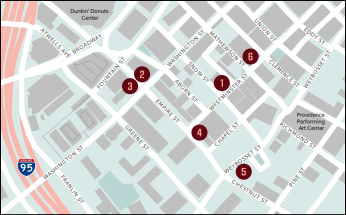

Providence's
Chinatown
Exhibit and Walking Tour
April 1 - May 31, 2018
Rhode Island State Archives
337 Westminster Street, Providence, RI
Open 8:30am - 4:30pm M-F
Rediscovering
Providence's Chinatown
Between 1880 and the late 1960s, Providence was home to a bustling Chinese American community. Its Chinatown had two successive centers: the first stood on Empire Street and the second on Summer Street between Broad and Pine. Providence’s Chinatown is a project to rediscover these locations and to connect this history to Rhode Island’s modern Chinese diaspora.
This site-specific exhibit is based in window fronts downtown where the first Chinatown used to stand. A collection of documents, images, objects, and oral histories are also on display at the Rhode Island State Archives.
This exhibit is an effort to share the history of Rhode Island’s Chinese community and create a permanent archive.
Self-Guided Tour
Walk the streets where Chinatown once stood and discover the stories of its community.
-
1IntroductionView cultural artifacts and historic maps
RI STATE ARCHIVES, 337 WESTMINSTER ST.
-
2(un)Welcome to AmericaImmigrating to Providence and RI
TRINITY REPERTORY, 201 WASHINGTON ST.
-
3Constructing CommunityCreating social and business networks
PROVIDENCE PUBLIC LIBRARY, 150 EMPIRE ST
-
4Beyond ChinatownStories of church life, military service, activism
400 WESTMINSTER ST.
-
5Historical Beneficent ChurchMulticultural Christian congregation
300 WEYBOSSET ST.
-
6Building BusinessesEstablishing laundries and restaurants
275 WESTMINSTER ST.